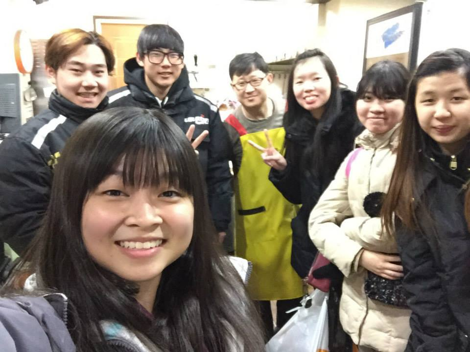
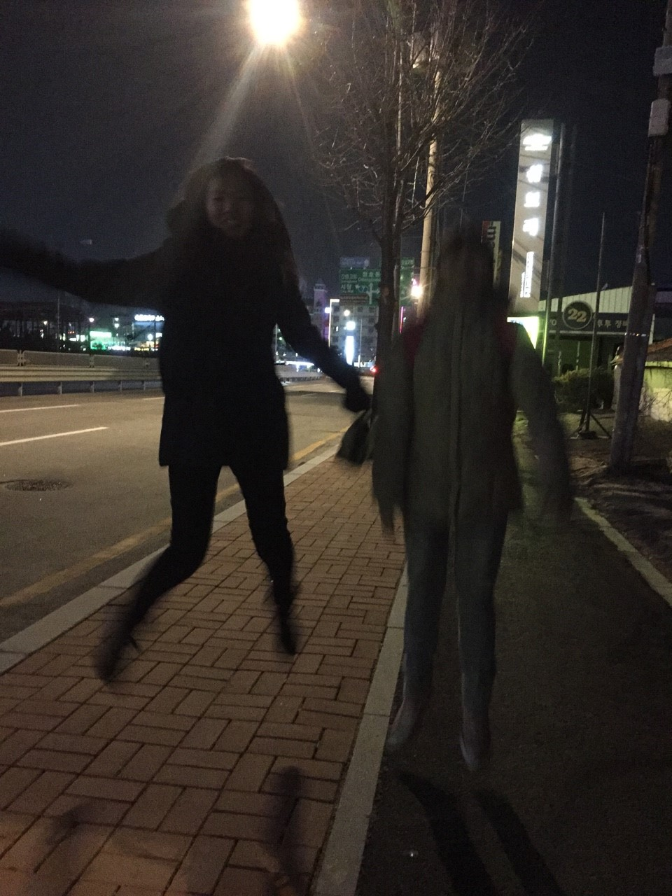
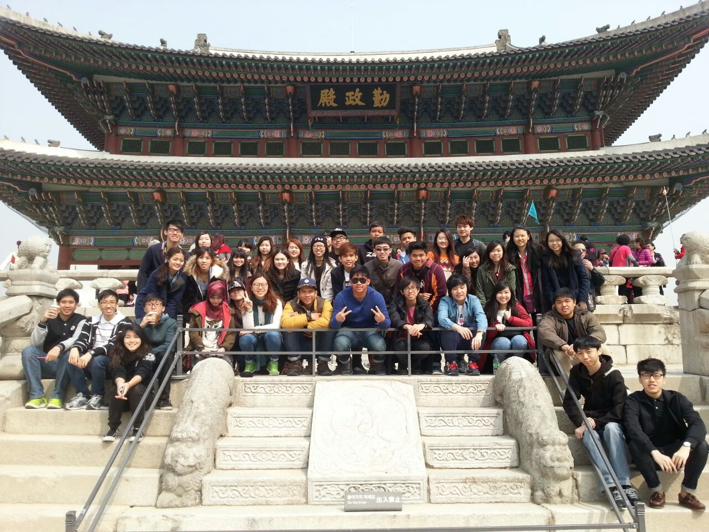
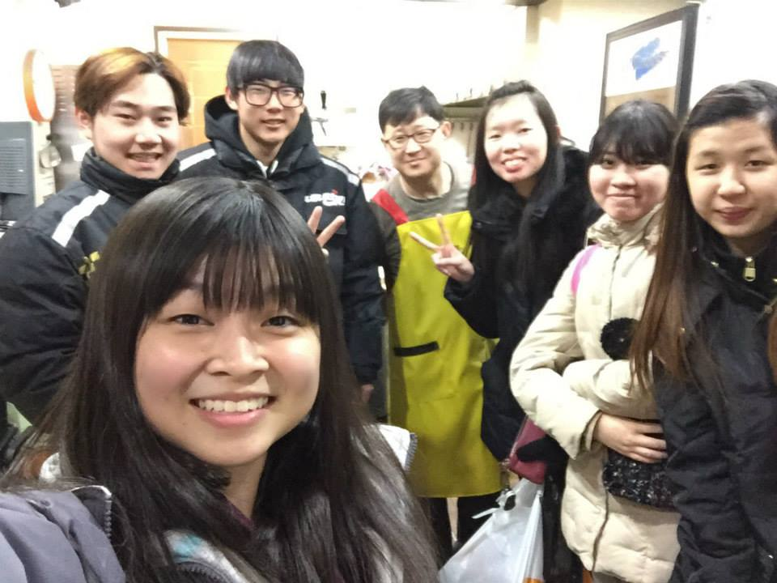
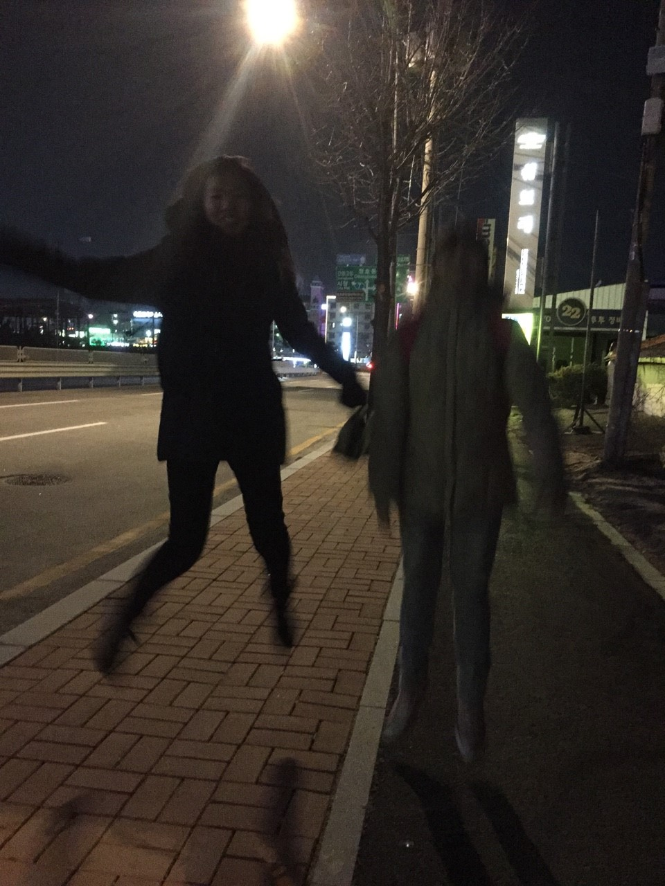
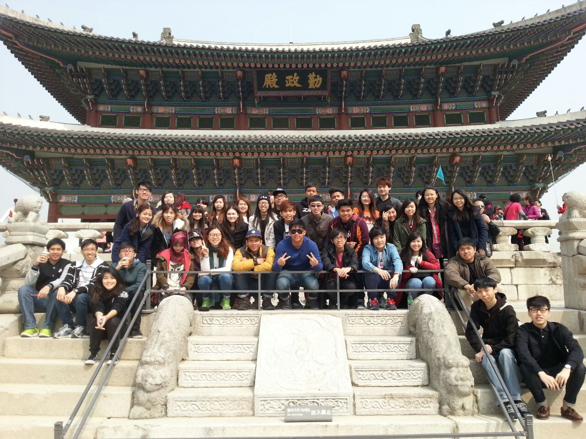

Recent Memorable Trip
Went to Korea on March 2015 for the last Study Trip before graduation. It was the start of the spring where the weather is very chilly. The temperature can go down to 3 degrees Celsius at night. It was my first time traveling to the cool country and I super love and enjoy the weather there. The tour guide is very friendly and funny, he brought us to eat the local delicacies, visit local hot places, EverLand and IT companies such as Samsung. What I love the most about the trip is that we venture out at night(12am onwards) to explore the places and alley. Even though we are foreign to the places, it is thrilling to walk around without knowing our ways back and contact with others. So fun!
 




